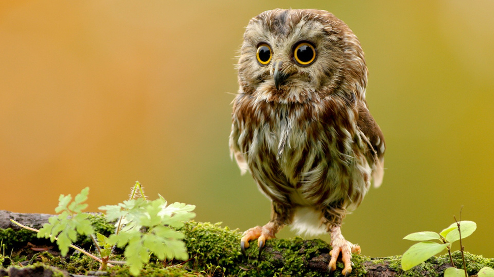

| |
Working With Baby Birds
|
|  |
Training your bird at a young age is ideal when compared to re-training or correcting the bad habits of an older bird. Some pet owners can become sidetracked by the freshness of having a new bird and enjoying their cuteness while they’re still baby birds; however, you must remember that in order to set the stage for the future, it is important to socialize your bird, work on good communication, and establish trust at a young age. Just as human babies need to learn to eat with a spoon and play well with others before they tackle long division, baby birds need to start with the basics. Spend time with your young bird developing trust and teaching the basics of good bird behavior. For example:
-
Body handling. If you help your baby bird become accustomed to being gently handled now, you will prevent many problems later. For example, gently playing with your bird’s feet and toes will help it tolerate toenail filing. Gently lift its wings, so a trip to the groomer doesn’t become a nightmare later on.
-
Toweling: Start using the towel as part of your play with your baby bird, gradually working into wrapping your bird up in the towel. When you or your vet need to wrap the bird in the towel for its own safety, the experience will be much less stressful.
-
Beaking: Baby birds use their beaks to explore, but now is the time to let your bird know that anything beyond gentle nibbles is unacceptable. Frown and tell your bird “No,” and leave it alone for a minute or two, so it associates biting with being put in “time-out.”
-
Harness: It can take some time before a bird accepts wearing a harness or flight suit , but things will go more smoothly if you start when the bird is young. Once you get your bird into the harness, take it outside, at least briefly, so it learns why the harness is worth the bother. It’s also a good time to try out the carrier. Take short car rides that don’t end at the vet each time, and your bird might look forward to them.
You will begin to notice better communication between you and your baby bird. Working with your bird frequently allows you to become familiar with the body language and preferences of the bird, making it easier to know what your pet wants and how to respond to its actions. By taking time to teach your bird new tricks, you are encouraging desired behavior. Your bird will begin to demonstrate the favorable behavior because it learns it receives your attention then, as opposed to misbehaving. The stimulation training provides your bird is also very important to cater to their intelligence and appease their curiosity. |
|
|